Bienvenue dans le registre des plus grandes primes connues du monde de One Piece. Des pirates légendaires aux nouvelles générations, découvre les montants attribués aux personnages par le Gouvernement mondial.
Dernière vérification : 19 octobre 2026. Les montants sont à revérifier lors de chaque nouvelle révélation officielle.
| Rang | Personnage | Équipage | Avis de recherche et prime | Fruit du démon | Haki | Origine |
|---|---|---|---|---|---|---|
| 1 | Gol D. Roger | Équipage de Roger |
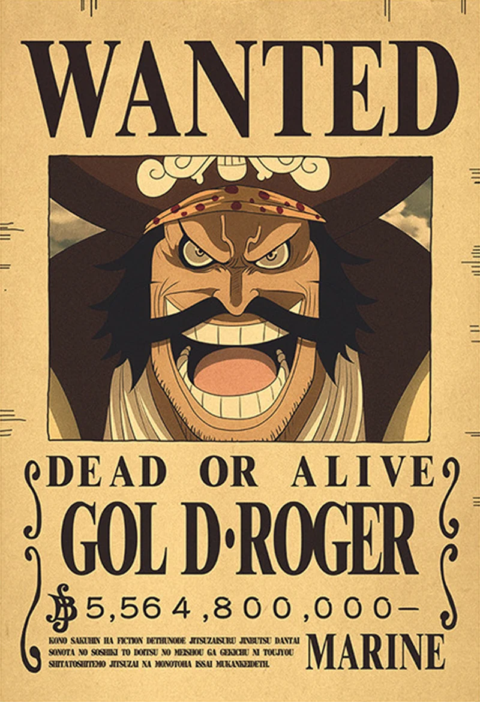 5 564 800 000 ฿ |
Aucun connu | Observation, Armement, Royal | East Blue |
| 2 | Edward Newgate (Barbe Blanche) | Équipage de Barbe Blanche |
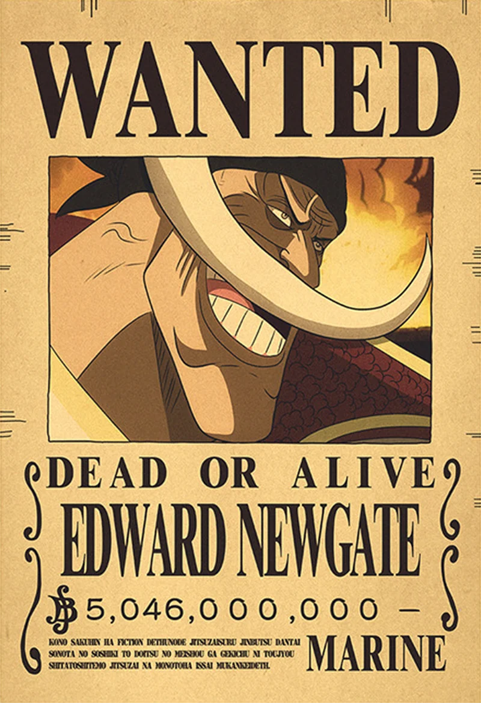 5 046 000 000 ฿ |
Gura Gura no Mi | Observation, Armement, Royal | Grand Line |
| 3 | Kaido | Équipage aux Cent Bêtes |
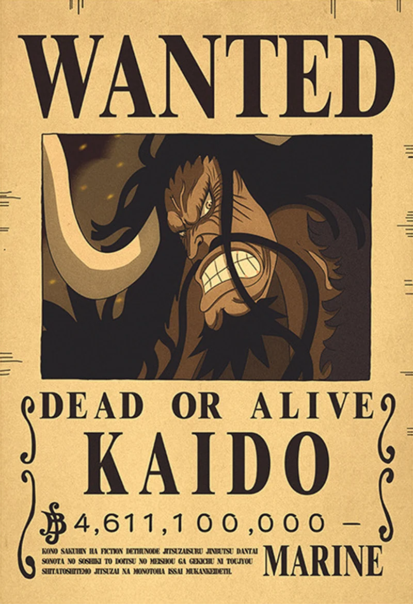 4 611 100 000 ฿ |
Uo Uo no Mi, modèle Seiryu | Observation, Armement, Royal | Grand Line |
| 4 | Charlotte Linlin (Big Mom) | Équipage de Big Mom |
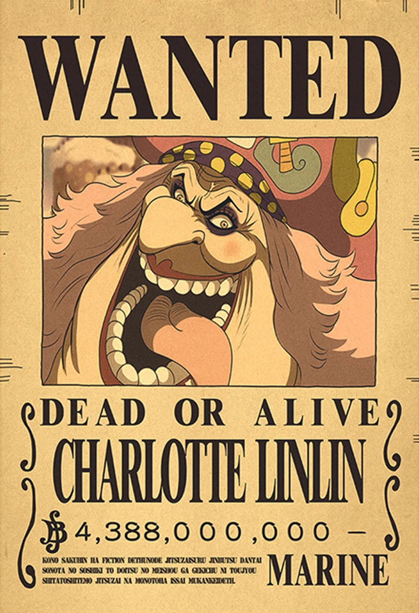 4 388 000 000 ฿ |
Soru Soru no Mi | Observation, Armement, Royal | Elbaf |
| 5 | Shanks | Équipage du Roux |
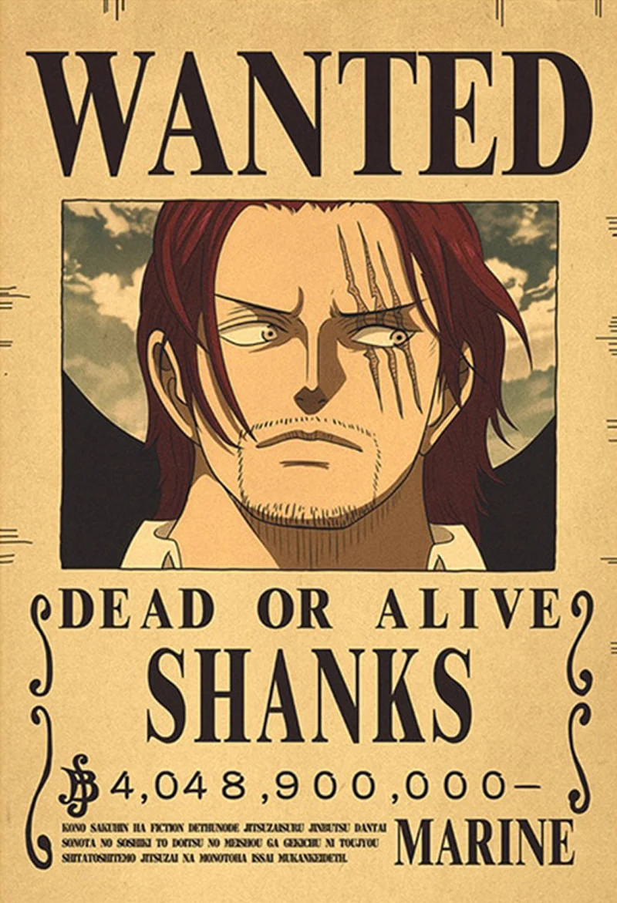 4 048 900 000 ฿ |
Aucun connu | Observation, Armement, Royal | West Blue |
| 6 | Marshall D. Teach (Barbe Noire) | Équipage de Barbe Noire |
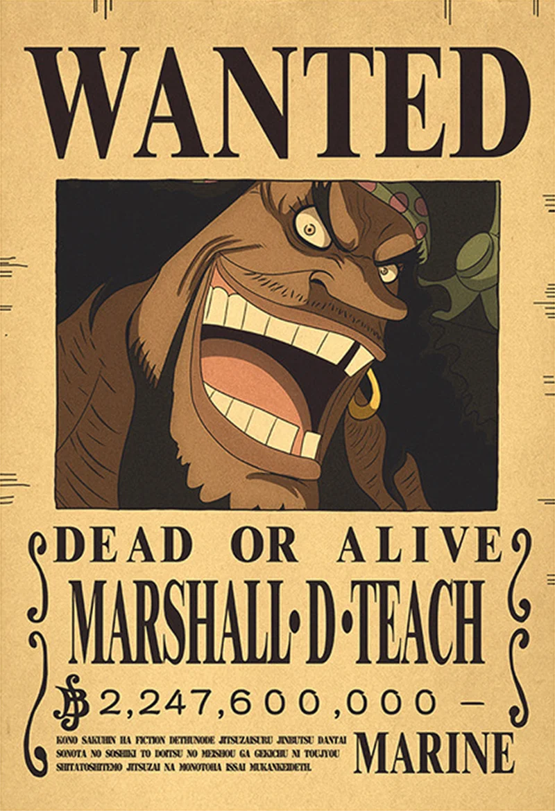 3 996 000 000 ฿ |
Yami Yami no Mi et Gura Gura no Mi | Non entièrement précisé | Grand Line |
| 7 | Dracule Mihawk | Cross Guild |
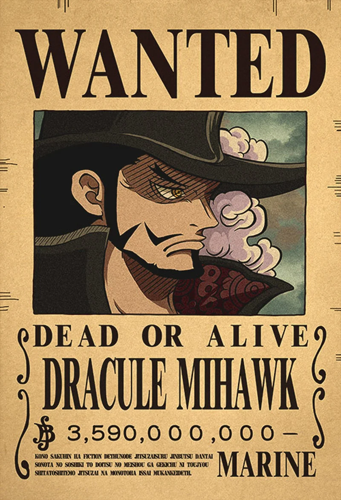 3 590 000 000 ฿ |
Aucun connu | Armement, Observation | Non précisée |
| 8 | Buggy le Clown | Cross Guild |
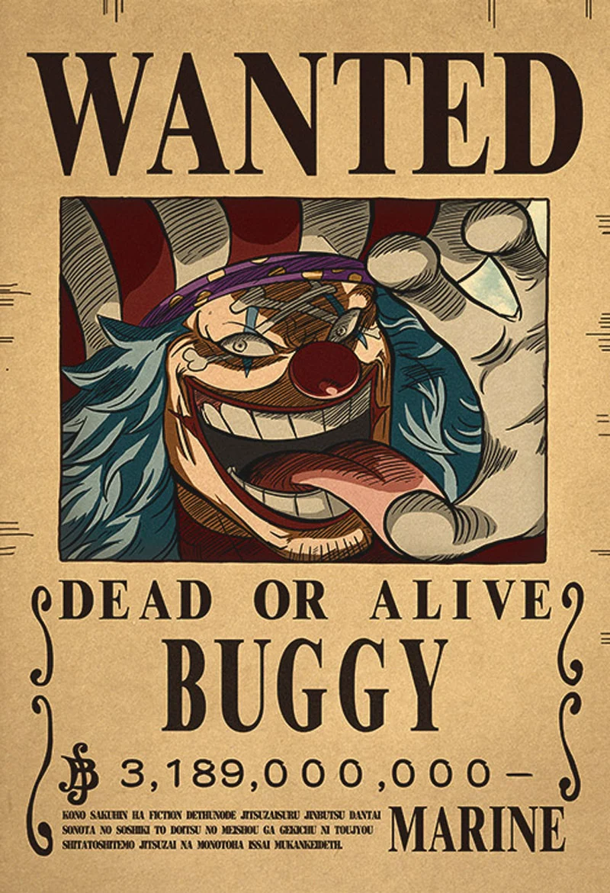 3 189 000 000 ฿ |
Bara Bara no Mi | Non confirmé | Grand Line |
| 9 | Monkey D. Luffy | Équipage du Chapeau de paille |
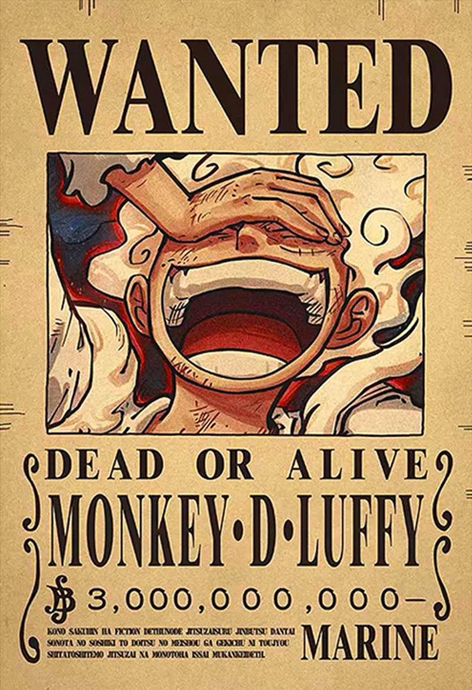 3 000 000 000 ฿ |
Hito Hito no Mi, modèle Nika | Observation, Armement, Royal | East Blue |
| Eustass Kid | Équipage de Kid |
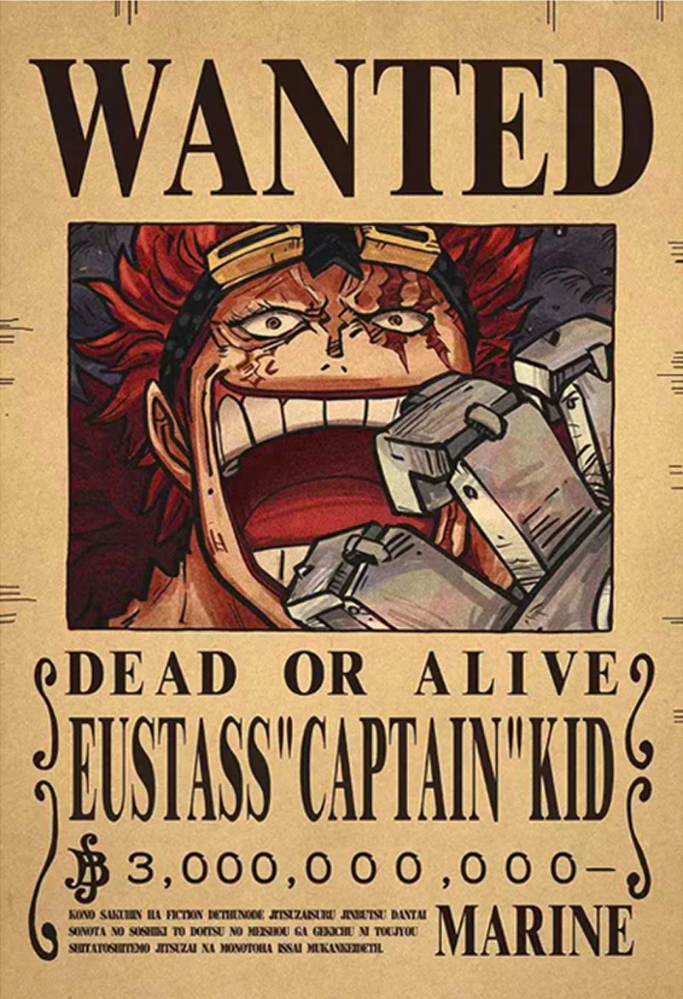 3 000 000 000 ฿ |
Jiki Jiki no Mi | Armement, Observation, Royal | South Blue | |
| Trafalgar D. Water Law | Équipage du Heart |
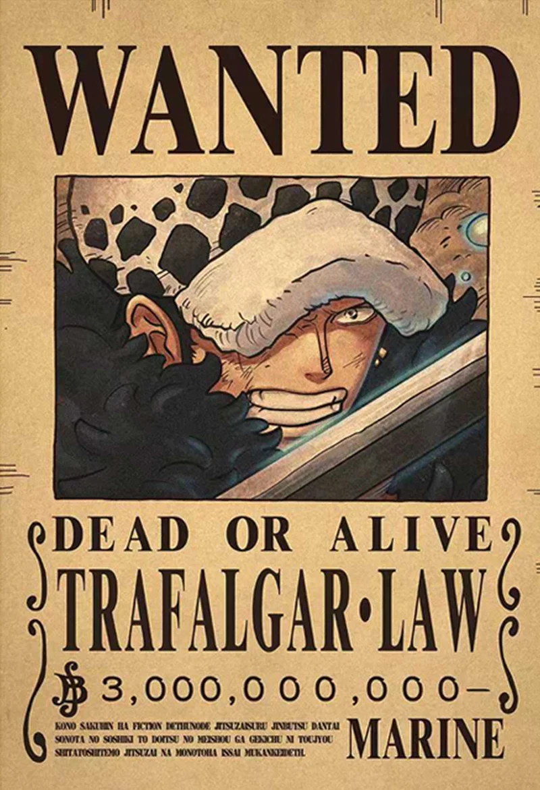 3 000 000 000 ฿ |
Ope Ope no Mi | Armement, Observation | North Blue | |
| 12 | Crocodile | Cross Guild |
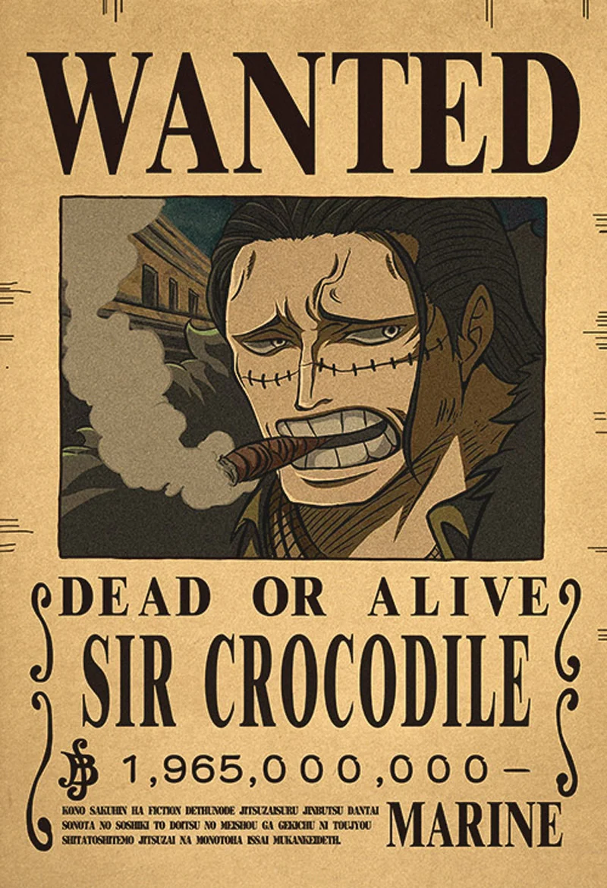 1 965 000 000 ฿ |
Suna Suna no Mi | Non entièrement précisé | Grand Line |
| 13 | Dorry | Guerriers géants |
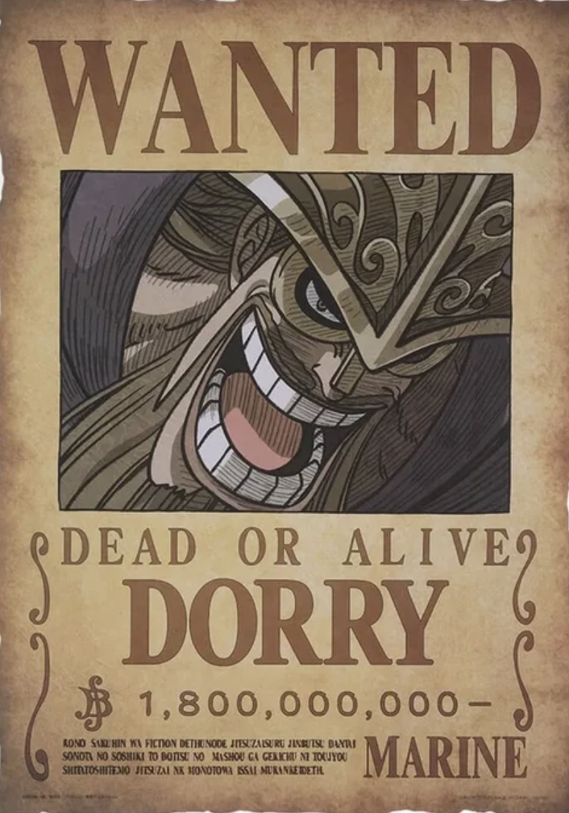 1 800 000 000 ฿ |
Aucun connu | Non entièrement précisé | Elbaf |
| 13 | Brogy | Guerriers géants |
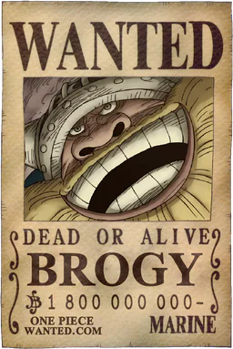 1 800 000 000 ฿ |
Aucun connu | Non entièrement précisé | Elbaf |
| 15 | Boa Hancock | Kuja |
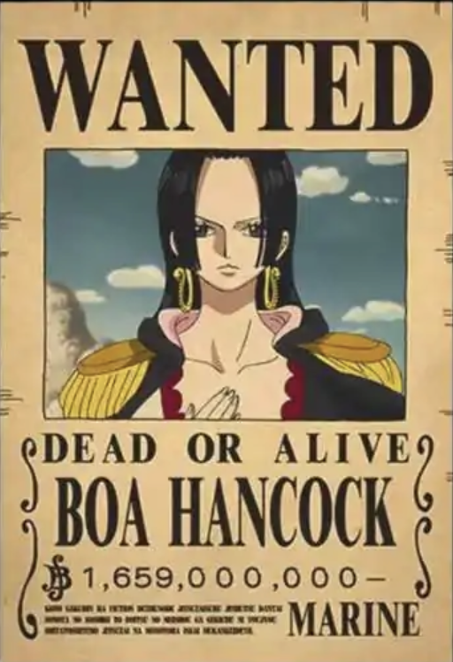 1 659 000 000 ฿ |
Mero Mero no Mi | Observation, Armement, Royal | Amazon Lily |